2020 Wing Rust Study

2020년도 광주과학기술원 전산 동아리 WING에서 진행할 러스트 프로그래밍 공식 가이드(통칭 꽃게책) 스터디를 위한 페이지 입니다.
참여자
- 김예지
- 김현서
- 김현성
스터디 역할
스터디는 다음 3 역할 중 하나를 각각 맡아서 진행할 예정입니다.
- 발표자 : 발표자료를 준비(예제코드, 책 읽으면서 궁금해서 나눠보면 좋겠다 생각하는 점, 읽어볼만한 글), 스터디 메인 진행
- 서기: 현장에서 발생한 질의 응답, 실습상황에서 주고 받은 문제 해결 방법, 발표 자료에 대해 주고 받은 문답 정리, 발표 시간 외에도 슬랙에서 주고 받은 내용인데, 유용하거나 발표자료에 누락된 자료 정리
- 정리자: 발표자와 서기한테서 자료를 받아 GitHub에 업로드
매 스터디 마다 역할을 바꿔서 진행할 예정입니다.
스터디 일정 조율
- 9월 8일 : 3단원
- 9월 15일 : 4단원
- 9월 22일: 5단원, 6단원
- 9월 29일: 추석 연휴
- 10월 6일 : 7단원
- 중간고사 기간(2주 쉼)
date: 2020-08-19
Rust 제안서
분야
- Rust
대상
- (필수)Rust에 관심이 있는 사람 Or Rust가 왜 인기 있는지 궁금한 사람
- (우대) C, C++ 에서 포인터를 경험해 보신적이 있으신 분
- (우대) 다른 프로그래밍 언어에서 자료구조나 공부 경험이 있으신 분
강의 진행 방식
- 독서 모임 방식
- 기본적으로 책을 기반으로 진행을 할 예정임.
- The Rust Programming Language(러스트 프로그래밍 공식 가이드)
- 어느 정도 문법이 익숙해지면 단순한 자료구조 문제를 백준에서 찾아서 해볼 생각임.
- 책을 미리 읽게 함: 구글 드라이브 스프레드시트에 독서 상황 및 요약 기록
- 프로젝트 단원(2, 12, 20 단원)은 진행자 없이 모여서 만드는 식으로 진행될 예정
- 스터디 진행원 중 매주 한 명을 선정해서 토픽을 진행하라고 할 예정
- 사용하는 발표자료의 형식은 제한이 없으나, 확장자는
.md로 해줄 것
- 사용하는 발표자료의 형식은 제한이 없으나, 확장자는
- 기본적으로 책을 기반으로 진행을 할 예정임.
- 코드 공유 및 소감 공유 방식
- 모임이 지나면 짧은 소감문을 작성하게 시킬 것
- 2달 or 3달 단위로 긴 소감문을 작성하게 할 것
- 소감문 및 강의 자료는 전부 다 공개된 장소에 올릴 예정입니다.
- 다른 사람에게 전달하는 것에도 어느 정도 목적이 있기 때문에 아마 팀 블로그(티스토리나 github page)로 공개할 에정입니다.
- 저장용, 공유용 저장소/페이지를 한번에 관리할 수 있는 Github Page가 편할 것 같기는 합니다.
- 모임이 지나면 짧은 소감문을 작성하게 시킬 것
- 진도 나가는 속도:
- 이 책은 총 12 단원으로 구성되어 있고, 한 학기는 약 3개월 정도이므로 한 주에 한 챕터 정도를 나가는 것을 목적으로 하고 싶습니다.
- 다만 시험 기간 등 여러 요인으로 인해 초반 3 챕터 정도는 굉장히 빠르게 진행할 생각입니다.
강의 자료
- 러스트 프로그래밍 공식 가이드(스티브 클라브닉, 캐롤 니콜스 씀/ 장현희 옮김, 제이펍)
- 이 책의 저장소는 rust-lang/book에 소스와 영문판이 올라와 있지만, 한국어 판도 보는 것을 추천드립니다.
- GIST 도서관에 책을 신청했는데, 예산 없다고 거절 당했어요. 10월달에 다시 신청할 예정입니다.
사용 도구
- (필수) Rust와 그 안에 포함된 패키지(rustfmt, cargo)
- (필수) mdbook으로 정정 사이트(책) 만들기
- (추천) VS Code와 Rust 확장(RLS를 통한 강력한 자동완성)
- (추천) Marp(마크다운을 통한 슬라이드 작성, 소스코드도 쉽게 넣을 수 있습니다.)
왜 Rust를 배워야 할까요?
C와 C++이 아직도 현역인 이유
지금까지 정말로 로그래밍 언어가 개발되었습니다. 여러 언어가 나오고, 또 여러 언어가 사라졌습니다. 그렇지만 과거에 만들어져도 현재에도 폭넓게 쓰이는 언어들이 있습니다. C와 C를 발전 시킨 C++ 계열입니다. 이 언어는 거의 모든 일을 할 수 있습니다. 그렇지만 만들어진 시점도 옛날이고, 수동적이고 안전하지 않은 메모리 관리, 느린 컴파일 속도, 복잡한 문법으로 인해 많은 언어들이 나오고 C와 C++의 자리를 가져갔습니다.
그렇지만 메모리 구조 같이 시스템의 밑바닥에서 작업해야하는 부분을 건드릴 수 있는 건 C와 C++ 밖에 없기 때문에, 아직도 시스템 프로그래밍이나 웹 브라우저 같이 복잡한 곳, 혹은 극한까지 성능이 필요한 곳, 하드웨어 성능제약이 매우 심한 곳에서는 C와 C++이 아직도 현역으로 쓰이고 있습니다.
Rust의 탄생
Rust는 원래 Mozila 재단의 그레이던 호어의 개인 프로젝트 였습니다. 당시 Mozila 재단은 웹브라우저 성능을 높히기 위해 새로운 돌파구를 찾으려 했습니다. 이 프로젝트에는 파이어폭스 퀀텀이라는 이름이 붙었고, 이 프로젝트를 통해 만들어진 렌더링 엔진에는 Servo라는 이름이 붙었습니다. 현재는 어느 정도 완성이 되어 파이어폭스에서 직접 써볼 수 있습니다.
웹 브라우저는 기본적으로 매우 복잡합니다. 특히 요즘은 웹에서 할 수 있는 일이 폭발적으로 증가하는 시점에서는 더 복잡합니다. 이런 상황에서 성능을 올리는 것은 힘듭니다. 특히 C++로 짤 때는 어려운 문법 구조로 인해 더 힘듭니다. 거기에 메모리 관리 같이 성능에 직접적으로 영향을 미치고 안전에 중요한 영역 때문에 더 작성이 힘듭니다.
이 때 주목 받은 것이 Rust입니다. 수동적이고 예측가능하면서 안전한 메모리 관리, 현대적 언어 설계를 도입하여 보다 쉬워진 설계 같이 다양한 장점을 가지고 있는 Rust를 Mozila에서 채택하면서 더 진보된 웹 브라우저 엔진을 제작할 수 있게 되었습니다. 현재도 Mozila 재단은 Rust 재단의 가장 큰 스폰서 중 하나입니다.
Rust의 장점
Rust는 C++로 해야하는 일을 보다 편리하고, 안전히 하기 위해 만들어 졌고, 그에 따라 여러 장점을 가지고 있습니다.
- 빠른 실행속도 : Rust는 컴파일이 된 후, 빠르게 실행하게 위해 여러 최적화를 도입하였습니다. 또한 컴파일 속도도 C++에 비하면 비교적 개선되었습니다.
- 안전하고 예측가능한 메모리 관리: Rust는 Java같은 언어와 다르게 C++ 처럼 직접 메모리 관리를 합니다. 그렇지만 Rust는 컴파일 단계에서, 잘못된 메모리 접근을 막습니다. 또한 직접 메모리 관리를 하기 때문에 메모리 사용을 보다 직관적으로 이해할 수 있습니다. 여러분이 C 계열에서 포인터를 배워 보셨거나, 자료구조 과목에서 메모리 때문에 고민해보신 적 있다면 좋은 선택이 될 것입니다.
- 개발도구가 정리되어 있습니다. : 포맷터, 라이브러리 문서 작성 도구, 빌드 도구, 패키지 관리 도구 전부 다 언어 안에 포함되어 있고, 각 OS에서 동일한 실행을 보장합니다.
- 꾸준히 사용처가 늘고 있습니다. : Rust 사용자는 갈수록 늘어나고 있으며, 성능과 엄격함이 필요한 분야에서 갈수록 Rust 사용이 늘어 나고 있습니다. 작게는 명령쉘에서 사용하는 프로그램에서 시작해, 웹 서버, 웹 앱,웹 브라우저까지 갈수록 사용처가 늘고 있습니다.
- 커뮤니티가 활발합니다: 가장 활발한 개발 커뮤니티 중 하나인 스택오버플로우에서 선정된 개발자들이 좋아 하는 언어에서 최근 계속 상위권을 유지하고 있고, 많은 개발자들이 러스트를 개선하고 발전하고 확장시켜 나가는 데 기여하고 있습니다.
참고문헌
- 왜 Rust언어인가?
- 꽃게책
책 만들기
mdbook
이 프로젝트는 마크다운 형식으로 파일을 공유하고, Marp 같은 툴을 빌려서 현장에서 보여주기도 할 예정입니다. 그렇지만 Github Pages를 통한 배포를 하기 위해 정적인 사이트 형태로도 렌더링할 예정입니다. 저희가 이 렌더링 과정에서 사용할 툴이 mdbook입니다. 마크다운 파일을 기반으로 책과 비슷한 형태로 제작해줍니다. Gitbook과 같은 책의 형태로 만들어 주는 다른 플랫폼도 있고, Jekyll 같은 다른 정적 사이트 생성기를 통해서 만들 수도 있지만 Rust로 짜여있기 때문에 이 도구를 선택하게 되었습니다.
mdbook 설치
mdbook은 cargo를 통해서 손쉽게 설치가 가능합니다.
cargo install mdbook
mdbook으로 책 만들기
1.목차 구성
src/에 마크다운으로 본인이 담당한 파일을 만들면, 이를 목차 정보를 담당하는 SUMMARY.md에도 명시를 해줘야 합니다. 탭으로 하위 챕터를 구별합니다.
예를 들어, Chapter 1의 하위로 러스트 설치하기라는 제목으로 install_rust.md가 담고 있는 정보를 넣고 싶다면 아래와 같이 SUMMARY.md를 구성하면 됩니다.
# Summary
<!-- 목차를 작성하는 페이지입니다. 목차 작성도 꼭 확인해주세요. -->
- [Chapter 1](./chapter_1.md)
- [러스트 설치하기](./install_rust.md)
2. 책 만들기 및 업데이트
단순히 책을 만들고 싶은 거면, 아래와 같이 입력 후 Push를 해주세요.
mdbook build
웹브라우저에서 바로 확인하고 싶다면 아래와 같이 입력하면, 빌드와 동시에 웹브라우저를 열어줍니다.
mdbook build --open
2020년 9월 1일
시각
- 2020년 9월 1일 20시
- Zoom을 통해 진행
역할 분담
첫 발표는 서기와 발표자를 동시에 진행할 예정입니다.
- 발표자: 김현서
- 서기: 김현서
marp: true
러스트 설치하기
2020년 9월 1일 김현서
Rust
Rust를 설치하는 방법은 여러 방법이 있지만, rustup이라는 도구를 통해서 rust와 그와 관련된 도구를 설치할 수 있습니다. 설치는 윈도우 기준입니다.
1. Rust-lang install 접속
- https://www.rust-lang.org/tools/install 접속
- Visual Studio C++ Build Tools 링크 클릭

2. Visual Studio C++ Build Tools 설치
- 링크 클릭 :
vs_BuildTools.exe다운로드 후 실행 - 이후 Visual Studio Build Tools 2019를 기본 옵션으로 설치

3. RUSTUP-INIT.EXE 실행
- https://www.rust-lang.org/tools/install로 들어와서 64비트 다운로드 후 실행

- 이후 default 옵션으로 설치하기 위해 1을 입력 후 실행

5. 설치 확인
-
설치 확인을 위해서 터미널(CMD, Bash, PowerShell이든 뭐든)에서 다음 명령어를 입력합니다.
rustc --version다음과 같은 형식으로 출력되면 성공한 것입니다.
rustc x.y.z. (abcabcabcc yyyy-mm-dd)
텍스트 에디터 Visual Studio Code 설치 및 세팅
- Rust를 메모장에서 공부할 수도 있고, 이 책을 따라가는 데 큰 불편함이 없을 수도 있겠지만, 그래도 편한 도구를 사용해 봅시다. Visual Studio Code는 여러 막강한 기능을 제공하는 에디터이지만 그건 스스로 찾아 보시고 여기서는 rust와 관련된 기능만 사용할 것입니다.
1. Visual Studio Code 설치
-
https://code.visualstudio.com/ 접속, 파일 설치 및 실행

2. Rust 확장 기능 설치
- https://marketplace.visualstudio.com/items?itemName=rust-lang.rust에 들어가 install 누르기
- 그러면 VSC에서도 그 확장 기능 창이 뜰 텐데 설치하면 됩니다.

3. 설정 지정
- 대부분의 설정은 GUI로 설정할 수 있는데, 몇몇 설정은 직접 파일을 수정하긴 해야합니다.
- 그 파일을 접속하긴 위해선 윈도우 탐색기에서
%appdata%/Code/User에 들어가면settings.json에 들어가서 편집해야합니다.
-
그래서 파일을 미리 작성해서 여기 적어놓았습니다.
{ "[rust]": { "editor.defaultFormatter": "rust-lang.rust", "editor.tabSize": 4 }, "editor.insertSpaces": true, "rust-analyzer.checkOnSave.overrideCommand": null, "rust-analyzer.debug.engine": "vadimcn.vscode-lldb", "rust-analyzer.rustfmt.overrideCommand": null, "rust.build_lib": false, "editor.formatOnPaste": true, "editor.formatOnSave": true, "editor.formatOnType": true, }
Git
- 가장 폭 넓게 쓰이는 버전관리 시스템입니다. 저희는 Github에서 제공하는 기능과 연계하여 배포용으로만 사용할 예정입니다.
Git 설치
- https://git-scm.com/downloads 들어가서 설치해주세요.

- Github에 가입해주세요.
기본적인 Git 사용법
1.SSH 키 등록
- Github에 기록을 올리고 내릴 때마다 인증을 하는 방법도 있지만 한 번에 진행하는 방법이 있습니다.
- https://git-scm.com/book/ko/v2/Git-%EC%84%9C%EB%B2%84-SSH-%EA%B3%B5%EA%B0%9C%ED%82%A4-%EB%A7%8C%EB%93%A4%EA%B8%B0
- 앞의 가이드를 참고해서 키를 만든 후, Github에 등록을 해야합니다.

-
저장소 (전체 폴더) 받기
git clone https://github.com/2020-Wing-Rust/2020-Wing-Rust.github.io.git -
저희는 정말 최소한의 기능만 사용할 것이기 때문에, VS Code를 통해서 Git을 관리하도록 하겠습니다.
- Git에서 작업을 기록하는 것을 commit, commit할 파일 목록에 올리는 것을 stage라고 합니다. vs code에서 저 버튼을 클릭하면 그 파일을 스테이징 할 수 있습니다.
- 스테이징 시점이 기준이므로, 추가적인 수정 사항도 포함하고 싶다면 다시 stage를 눌러주세요.
- 이후 위의 입력창에 적당히 커밋하는 내용을 요약한 후 Ctrl + Enter를 누르면 됩니다.

- 그 이후, 동기화를 눌러주세요. 이 작업은 최신버전으로 업로드(푸쉬)와 다운로드(풀)을 동시에 진행합니다.

Markdown
- 마크다운은 편하게 문서를 쓰기 위한 언어입니다. 현재 사용 중인 플랫폼도 마크다운 파일을 받아들여서 HTML 형식의 전자책으로 만드는 과정을 통해 배포되고 있습니다. 여기서는 직접적으로 문법을 안 다루겠습니다. 굳이 마크다운으로 자료를 만들 필요는 없거든요.
- https://heropy.blog/2017/09/30/markdown/
진행 중 기록사항
Visual Studio Build Tools 2019 중에서 뭘 설치해야 하나요?
맨 처음에 있는 Visual C++ 개발도구를 선택해서 설치하면 됩니다.
Git을 사용하는 이유
- Github Pages를 통한 웹사이트 제작
- 자료 저장
2020년 9월 8일
시각
- 2020년 9월 8일 20시 30분
- Zoom을 통해 진행
주제
- 향후 일정 정리
- 첫 실습인 챕터 2를 진행하며 받은 러스트에 대한 첫 인상
- 다음 주 발표자 선정
역할 분담
- 발표자: 김현서
- 서기: 김현서
9월 8일 러스트 스터디 챕터 2
챕터 2 진행하면서 의문점이나 감상점
김현서
- 러스트에서 기본적으로 제공하는 여러 도구들(포맷터, 카고 등)이 편리하였다.
김현성
- 터미널만으로도 편하게 할 수 있는 도구가 언어안에 기본 포함되어 있었다.
- C++에서 유래된 것 같은 표현 법이 여러모로 많았다.
- 변수: 기본이 변경 불가인게 신기
- print가 매크로 제공된는게 신기하며 함수로도 제공되는 기능인지 궁금함
- A: 표준 입츌력을 담당하는 다른 함수가 있기는 하지만
print!와 같은 기능은 아님. 문서
- A: 표준 입츌력을 담당하는 다른 함수가 있기는 하지만
.으로 연결되는 체이닝이 신기함- 컴파일러가 인식하는 포맷팅 스타일이 비교적 자유로움
- A: 그렇지만 rustfmt가 기본 제공 되므로 자유로운 포맷 스타일이라고 하기는 힘들다.
김예지
- C 언어에서는
toml이 없었는데 뭔 개념인가- A: 데이터 형식을 표현하는 확장자로, 비슷한 것으로 JSON, YAML이 있다. 이 경우에서는 cargo에게 이 패키지에 대한 정보를 기록하는 용도로 사용되었다.
진도 계획 이야기
-
챕터 별로 분량이 다른데 챕터별로 나누면 불균형이 예상되므로, 전체적인 분량에 따라 조절할 예정
-
소유권은 러스트의 제일 큰 특징이기도 하고, 난해한 내용이므로 따로 다룰 것
-
예제를 만들어 보거나 참고할 만한 문제를 찾아보기 : 향후 발표 자료 등에 활용
-
추석 연휴에는 쉬는 것으로 결정
-
일정은 한 달 단위로 작성
-
9월 8일 : 3단원
-
9월 15일 : 4단원
-
9월 22일: 5단원, 6단원
-
9월 29일: 추석 연휴
-
10월 6일 : 7단원
-
중간고사 기간(2주 쉼)
다음 주 계획
- 발표자: 김예지
2020년 9월 15일
시각
- 2020년 9월 15일 20시 30분
- Zoom을 통해 진행
주제
- 챕터 3 일반 프로그래밍 개념 진행
- 다음 주 역할 분담
역할 분담
- 발표자: 김예지
- 서기: 김현서
보편적 프로그래밍 개념
2020년 9월 15일 김예지

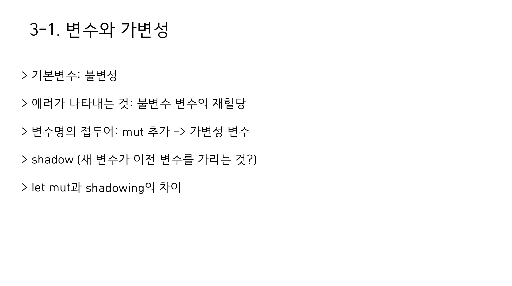
error[E0384]: cannot assign twice to immutable variable 'x: 불변 변수에 할당 시도시 나타나는 에러mut은아예 값을 바꾼다면,shadowing은 값은 그대로 있으나 새로운 값으로 연결하는 것

panic!은 rust에서 제공하는 매크로 중 하나로, 실패 메세지를 출력하고 스택 메모리를 정리한 후 정지하는 명령어이다. 이 경우 인덱스 값을 넘어선 범위를 접근하려 했기 때문에panic!이 호출된 것이다.- 타입이 고정되어 있긴 하지만 타입 추론이 강력하여, 변수 선언시 종류를 굳이 선언 안해도 됨.
boolean은 논리 연산(불 대수)를 하기 위한 연산자로, C언어에서는 그냥 0과 1을 사용하고, 대부분의 언어에서는boolean이 아니어도 조건문에 활용할 수 있지만, rust는 boolean을 반환하는 것만 조건문을 통해 받는다.
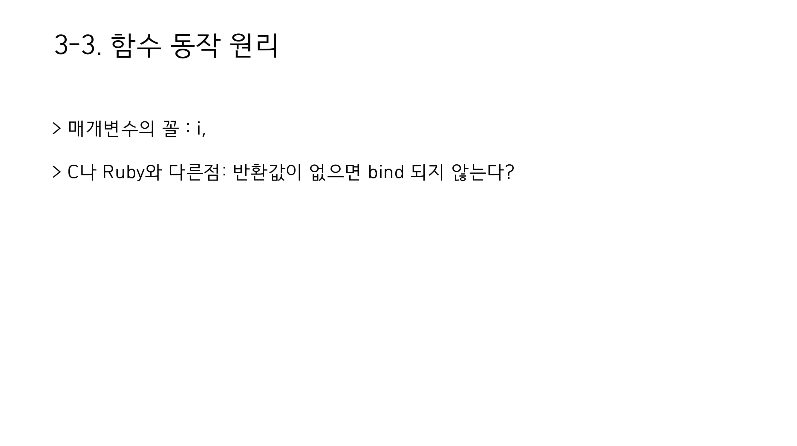
- 반환 값이 없다는 의미 : 대부분의 언어에서,
=를 실행하면 대입되는 값을 반환한다.x = y = 6하면 둘 다 6이라는 값이 들어가는 것처럼. 하지만 rust의 경우=는 아무것도 반환하지 않으므로 이렇게 묶을 수 없다.
- 문서화 주석을 제공하긴 하나 이 스터디에서 다루는 내용은 아님.
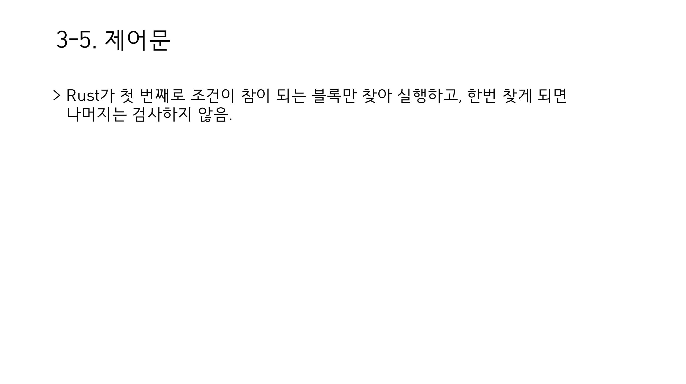
- 다른 언어도
if ... else if ... else로 구성된 블럭이면 마찬가지 - 조건문에는 반드시
boolean리턴 값이 들어가야 한다. - 더 정교한 처리를 원하면
match를 사용하자.
반복문
- 루프 자체에서 값을 리턴할 수 있다.
- 특정 조건은
while을 통해서 루프 가능하다. loop문으로 무한 루프를 돌릴 수 있다.for문을 통해 iterator를 비롯해 컬렉션들의 각 요소를 반복 시킬 수 있다.

2020년 9월 22일
시각
- 2020년 9월 22일 20시 30분
- Zoom을 통해 진행
주제
- 챕터 4 소유권 개념 진행
- 다음 주 역할 분담
역할 분담
- 발표자: 김현성
- 서기: 김현서
소유권
더 읽어보기
- https://www.snoyman.com/blog/2020/05/no-mutable-parameters-in-rust
- https://blueshw.github.io/2016/01/20/shallow-copy-deep-copy/
2020년 9월 22일
시각
- 2020년 10월 6일 20시 30분
- Zoom을 통해 진행
주제
- 챕터 5,6 구조체와 열거자
- 다음 주 역할 분담
역할 분담
- 발표자: 김현서
- 서기: 김현서
구조체(Struct)
2020년 10월 6일
구조체란?
- Object Composition의 일종 [1]
- 원시 데이터 타입을 묶어서 새로운 데이터 타입으로 라벨링 하는 것
- 여기서 상속과 함수(메쏘드)를 포함하도록 만들어서 객체 지향 언어의 객체라는 개념을 만듬
- Rust의 구조체는 상속은 없지만 메쏘드를 선언할 수 있고, 생성자를 만들 수 있는 것과 같이 객체 지향 언어의 객체와 굉장히 비슷한 특징을 가짐.
구조체의 정의
- 구조체의 선언에는 구조체의 이름, 필드의 이름과 타입을 나열해야 한다.
#![allow(unused)] fn main() { struct User { username: String, email: String, sign_in_count: u64, active: bool } }
- Tuple struct : 필드의 이름이 없는 튜플을 통해서도 구조체를 만들 수 있다.
#![allow(unused)] fn main() { struct Color(i32, i32, i32); }
구조체 인스턴스의 생성과 이용
- 인스턴스 : 어떤 설계도(클래스, 생성자, 구조체 등)을 통해 만들어지는 대상
#![allow(unused)] fn main() { let some_color = Color(0, 0, 0); let user_1 = User{ username: String::from("hello"), email:String::from("hello"), sign_in_count: 0, active: false }; println!("{}", some_clor.1); // 0 println!("{}", user_1.username) // hello }
구조체 인스턴스를 반환하는 함수
- 구조체를 반환하는 함수를 만들 수 있다.
#![allow(unused)] fn main() { fn make_user(email: String, username: String) -> User { return User { username, email, sign_in_count: 0, active: false } } }
derive 어노테이션으로 디버깅 하기
#[derive]attribute를 통해, 우리는 이미 기본적으로 구현된 몇몇 trait을 사용할 수 있게 해줌.- 그 중 하나가
{:?}를 통해 값을 포맷팅 할 수 있게 해주는 Debug [2] - 기본적으로 Display를 구현하지 않더라도 출력할 수 있게 해줌
#![allow(unused)] fn main() { #[derive(Debug)] struct Rectangle { width: u32, height: u32, } let rect1 = Rectangle { width: 30, height: 50, }; println!("rect1: {:?}", rect1); }
메쏘드
- 그 객체 인스턴스와 그 데이터에 접근 가능한 서브루틴 : 함수와 유사하다.
&self인자를 통해 접근 가능하며, 이 외에도 다른 매개변수를 받을 수 있다.- 위의
Rectangle구조체의 넓이를 구하는 메쏘드를 구현해보자.
#![allow(unused)] fn main() { impl Rectangle { fn get_area(&self) -> u32{ //&self를 인자로 인스턴스와 그 데이터에 접근한다. self.width * self.height } } }
연관 함수
- 메쏘드와 유사하나, 인스턴스와 데이터에 접근하지 않는 함수(==
&self를 인자로 가지지 않는 함수) - 생성자(새로운 인스턴스를 리턴하는 함수)를 만드는 데 주로 사용됨.
- 객체 지향 언어의 정적 메소드와 비슷한 개념(단, 일반적으로 생성자는 정적 메소드가 아님.) [3]
#![allow(unused)] fn main() { impl Rectangle { fn square(size: u32) -> Rectangle { Rectangle { width: size, height: size, } } } }
참고문헌
[1] “Object composition,” Wikipedia. Sep. 21, 2020, Accessed: Sep. 28, 2020. [Online]. Available: https://en.wikipedia.org/w/index.php?title=Object_composition&oldid=979633822.
[2] “Derive - Rust By Example.” https://doc.rust-lang.org/stable/rust-by-example/trait/derive.html (accessed Sep. 29, 2020).
[3] Aron and K. Tugay, “java - Constructor is static or non static,” Stack Overflow, 27 2019. https://stackoverflow.com/questions/12940421/constructor-is-static-or-non-static (accessed Sep. 30, 2020).
열거자와 패턴 매칭
2020년 10월 6일
열거자란?
- 여러종류의 값 선택지가 있지만, 그 중 단 한 값을 가져야 하는 경우를 표현하기 위한 데이터 타입
- 앞에서 배운 구조체랑 결합하여 좀더 편하게 여러 데이터 형식을 만들 수 있음
#![allow(unused)] fn main() { enum IpAddr { V4(u8,u8,u8,u8), //4개 정수 튜플 구조체를 가지게 된다. V6(String) //문자열을 값으로 가지게 된다. } }
Null
- 값이 비어있음을 표현하는 값
- 왜 이런 값이 필요할까?
- 값이 들어가야 하는 건 알지만 어떤 값이 들어가야 할지 모를 때
- 값이 아직 들어가지 않았음을 표현할 때

Null의 해악 [1]
- 그렇지만 Null은 너무 무분별하게 쓰였으며, 심지어 모든 타입에 대응되는 단 하나의 특이한 값이라는 특징 때문에 끔찍한 재앙을 가져왔습니다.
- 가장 끔찍한 예시로, 문자열이 존재하지 않는 C에서는 문자 배열의 끝에 NULL을 넣는 것으로 문자열의 끝을 표현합니다.
- 모든 값에 대응되는 특성상 원래 의미대로면 Null 내지는 NullException을 반환해야할 IndexOf 같은 경우도 대부분의 프로그래밍 언어에서 -1을 반환하는 식으로 작동합니다.
- 모든 값이 Null이 될 필요도 없고, 되면 위험하지만, 될 수 있기 때문에 Null을 따로 체크해줘야 합니다.
Option : Null에 대한 거의 완벽한 해결책
- Null이 의미하는 값이 없는 값이라는 건 구현하다보면 피할 수 없는 존재입니다.
- 그렇다면 이를 어떻게 해결할까요? 바로 값이 없을 수 있는 데이터를 값이 있는 경우와 아닌 경우로 나누면 됩니다.
- 이것이 바로 Option 열거자가 필요한 이유입니다.
#![allow(unused)] fn main() { enum Option<T> { //T에는 데이터 타입이 들어가며, 각 데이터 타입에 대응되는 코드를 알아서 컴파일러가 만들어 줍니다. Some<T>, None } }
match 흐름 제어 연산자
- 다른 언어의 switch case문과 비슷하게 작동
- 그렇지만 어떠한 변수라도 들어갈 수 있는 swtich case와는 다르게, 열거자만 들어갈 수 있음
#![allow(unused)] fn main() { fn value_in_cents(coin: &Coin) -> u32 { match coin { Coin::Penny => 1, //1은 표현식 Coin::Nickle => 5, Coin::Dime => 10, Coin::Quarter => { println!("쿼티입니다"); 25 } } } fn is_dime_or_quarter(coin: &Coin) -> bool { match coin { Coin::Dime => true, Coin::Quarter => true, _ => false, } } fn is_dime(coin: &Coin) -> bool { if let Coin::Dime = coin { true } else { false } } }
Options::Some과 Match의 활용 : 에러 없는 정수 나누기[2]
#![allow(unused)] fn main() { // An integer division that doesn't `panic!` fn checked_division(dividend: i32, divisor: i32) -> Option<i32> { if divisor == 0 { // Failure is represented as the `None` variant None } else { // Result is wrapped in a `Some` variant Some(dividend / divisor) } } // This function handles a division that may not succeed fn try_division(dividend: i32, divisor: i32) { // `Option` values can be pattern matched, just like other enums match checked_division(dividend, divisor) { None => println!("{} / {} failed!", dividend, divisor), Some(quotient) => { println!("{} / {} = {}", dividend, divisor, quotient) }, } } }
참고문헌
[1] P. Draper, “The worst mistake of computer science,” Lucidchart, Aug. 31, 2015. https://www.lucidchart.com/techblog/2015/08/31/the-worst-mistake-of-computer-science/ (accessed Sep. 30, 2020).
[2]“Option - Rust By Example.” https://doc.rust-lang.org/rust-by-example/std/option.html (accessed Sep. 30, 2020).
일정 계획 및 분배
일정 관리
- 11월 3일에 다시 만나요
챕터 분배
-
11월 3일
- 챕터 7 패키지 크레이트 묘듈로 프로젝트 관리하기 : 김현성
- 챕터 8 범용 컬렉션 : 김예지
-
11월 10일
- 챕터 9 : 추후 정하기
- 챕터 10 제네릭 타입, 트테이트 그리고 수명 : 김현서
2020년 11월 3일
시각
- 2020년 11월 3일 20시 30분
- Zoom을 통해 진행
주제
- 챕터 7 패키지, 크레이트, 모듈로 관리하기
- 챕터 8 범용 컬렉션
- 다음 주 역할 분담
역할 분담
- 발표자: 김현성(챕터7), 김예지(챕터 8)
- 서기: 김현서
패키지, 크레이트, 모듈로 프로젝트 관리하기


범용 컬렉션


추가논의
-
다차원 벡터 선언은 어떻게 하나요?
https://stackoverflow.com/questions/13102786/two-dimensional-vectors-in-rust
Vec<Vec<T>>형태로 할 수 있다.
2020년 11월 3일
시각
- 2020년 11월 10일 20시 30분
- Zoom을 통해 진행
주제
- 챕터9 에러 처리
기타
- 스터디 시간에만 결석 이야기 하지 말고 슬랙에다가도 좀 남깁시다.
에러 처리
이번 슬라이드는 좀 수정한 내용이 많습니다.


2020년 11월 3일
시각
- 2020년 11월 17일 20시 30분
- Zoom을 통해 진행
주제
- 챕터10 제네릭 타입, 트레이트 그리고 수명
기타
-
다음 함수를 적절하게 고쳐 봅시다.
#![allow(unused)] fn main() { fn largest <T>(list: &[T]) -> T { let mut largest = list[0]; for &item in list.iter() { if item > largest { largest = item; } } return largest; } }- 이 함수를
>연산자에 필요한PartialOrd가 구현된 타입에 대해서만 받도록 수정해봅시다.- 그리고 데이터를 전달받는 과정에서 필요한 트레이트가 명시되야지 오류가 일어나지 않습니다. 그 부분도 수정해봅시다.
- 리턴 타입을 참조로 변경해서 위와는 다른 방식으로 작동하게 수정해 봅시다. 힌트:
&의 역할이 무엇인지 고민해보세요.
- 이 함수를
제네릭과 트레이트
Generic
#![allow(unused)] fn main() { fn largest_i32(list: &[i32]) -> i32 { let mut largest = list[0]; for &item in list.iter() { if item > largest { largest = item; } } return largest; } }
→ 여기서 타입(i32)와 이름(largest_i32)만 바꾸면 다른 타입에서도 쓸 수 있지 않을까?
- 타입 정보를 매개 변수로 전달하여, 개발자가 작성하는 코드의 반복을 줄이자.
- 일반적으로, 타입 정보를 담고있는 변수를
T로 표시(Type) - 컴파일러에서 자동으로 각 타입에 해당되는 코드를 만들어서 그 것을 컴파일 한다.
- 함수, 열거자, 구조체, 메서드에서도 사용할 수 있다.
제네릭을 적용한 함수
#![allow(unused)] fn main() { fn largest<T>(list: &[T]) -> T { let mut largest = list[0]; for &item in list.iter() { if item > largest { largest = item; } } return largest; } }
제네릭을 이용한 구조체와 메서드
#![allow(unused)] fn main() { struct Point<T> { x: T, y : T, } impl<T> Point<T> { //제네릭으로 T 타입 매개변수를 받음을 명시해야 한다.fn fn x(&self) -> &T { return &self.x; } } impl Point<f32> { //특정 타입일 때만 적용되는 메서드 fn distance_from_origin(&self) -> f32 { return (self.x.powi(2) + self.y.powi(2)).sqrt(); } } }
특정 기능이 없는 타입이 제네릭에 들어가는 경우
T가 구현된 기능을 지원하지 않는 타입일 수도 있다.- 실제로도
largest함수는 컴파일 에러가 발생한다.
Compiling aggregator v0.1.0 (F:\Development\Rust Wing Study\rust-programming-language\ch8\aggregator)
error[E0369]: binary operation `>` cannot be applied to type `T`
--> src\main.rs:56:17
|
56 | if item > largest {
| ---- ^ ------- T
| |
| T
|
help: consider restricting type parameter `T`
|
특정 기능이 구현되어 있는 지 어떻게 컴파일러에게 알려줄 것인가?
Trait
- 여러 타입에서 할 수 있는 특정 기능을 추상적으로 정의하기
Trait 선언하기
트레이트 선언, 이름 , 그리고 타입의 행위를 정의할 메서드로 이루어짐
#![allow(unused)] fn main() { pub trait Summary { fn summarize(&self) -> String; //{} 를 붙이는 것이 아닌 ;을 붙인다. } }
#![allow(unused)] fn main() { pub trait Summary { fn summarize(&self) -> String { return String::from("대충 요약"); //미리 기본 구현을 할 수도 있다. } } }
Trait 구현하기
이미 선언된 트레이트를 가져와서 구현할 수도 있습니다. 단, 외부에서 정의된 타입에 외부에서 정의된 트레이트를 구현하는 건 불가능합니다. (같은 타입에 다른 트레이트가 같은 이름으로 구현될 수 있음.)
#![allow(unused)] fn main() { impl 트레이트_이름 for 타입이름 { fn 메서드_이름(&self) -> String { //세부 구현 } } }
Trait와 Generic으로 함수 만들어 보기: 트레이트 매개변수
특정 트레이트를 구현한 타입만 제네릭의 인자로 받을 수가 있다. → 컴파일러한테 이 타입이 가능한 행위를 알려줄 수 있다.
#![allow(unused)] fn main() { fn notify(item: impl Summary) {} fn notify<T: Summary>(item: T) {} fn notify<T: Summary + Clone>(item: T){} fn notify<T>(item: T) where T: Summary + Clone {} }
트레이트를 구현하는 타입을 리턴하는 함수를 만들 때에도 트레이트 매개변수를 활용한다. 이 때 트레이트를 구현하는 타입은 한가지만 반환이 가능하다.
#![allow(unused)] fn main() { fn returns_trait(switch: bool) -> impl Summary { if switch { NewsArticle } else { Tweet } } }
= note: to return `impl Trait`, all returned values must be of the same type
수명(Lifetime)
- 참조는 어디까지 유효할 것인가? 이 것을 표현하는 개념이 수명
- 기본적으로 컴파일러가 추론한다.
- 하지만 함수의 인자로 사용되는 참조 같은 경우, 컴파일러가 명시적으로 참조의 수명을 알 수 없어 죽은 참조가 생길 위험이 있다.
- 그를 위해 명시적으로 수명을 표시한다.
#![allow(unused)] fn main() { &i32 //참조 &'a i32//수명 매개변수 'a를 가지는 참조 &'a mut i32 //가변이 가능하고 수명 매개변수 'a를 가지는 참조 }
함수에서 사용
#![allow(unused)] fn main() { fn longest<'a>(x: &'a str, y: &'a str) -> &'a str { if x.len() > y.len() { x } else { y } } }
이 애노테이션의 의미
- 함수의 입력값
x,y는 최소한 수명'a동안 유효하다. - 이 함수의 리턴 값(참조)는 수명
'a를 가진다.
리턴 타입의 수명 매개변수는 입력된 매개변수의 수명 매개변수와 같아야 한다. 그러지 않으면 함수가 끝나는 순간 함수에서 반환된 참조는 죽은 참조가 될 것이다.
구조체에 참조 저장하기
구조체에도 참조를 저장할 수 있다. 그렇지만 구조체에 들어가는 참조의 수명이 보장되어야 죽은 참조를 피할 수 있으므로, 수명 매개변수를 작성해야 한다.
struct ImportantExcerpt<'a> { part: &'a str, } impl<'a> ImportantExcerpt<'a> { fn level(&self) -> i32 { 3 } } fn main() { let novel = String::from("Call me Ishmael. Some years ago..."); let first_sentence = novel.split('.') .next() .expect("Could not find a '.'"); let i = ImportantExcerpt { part: first_sentence }; }
수명 매개변수의 생략
- 그렇지만 모든 참조를 사용하는 상황에서 수명을 명시해야 하는 것이 아니다.
- 다음 3가지 규칙에 따라, 컴파일러는 자동으로 수명을 짐작한다.
- 각 참조는 각각의 수명 매개변수가 존재해야 한다.
- 명시적으로 하나의 입력 수명 매개변수가 있으면, 입력 수명을 모든 출력 수명 매개변수에 사용한다.
- 입력 수명 매개변수가 하나 이상이며, 함수가 메서드인 경우,
self의 수명을 모든 출력 변수에 적용한다.
- 이 규칙으로도 수명을 알수 없는 참조의 경우, 컴파일 에러가 발생하게 된다.
정적 수명
- 참조를 전역에서 사용될 수 있게 하는 수명
- 권장되지 않음
#![allow(unused)] fn main() { let s: &'static str = "이 문자열은 정적 수명을 가집니다.'; }
2020년 11월 3일
시각
- 2020년 11월 24일 21시
- Zoom을 통해 진행
주제
- 챕터11 자동화 테스트 작성하기
그외
- 챕터12는 각자 진행해서 스터디 진행하며 느낀 점과 같이 각자 자료를 정리해서 12월 30일까지 올리는 것으로 하겟습니다.
자동화 테스트 작성하기


 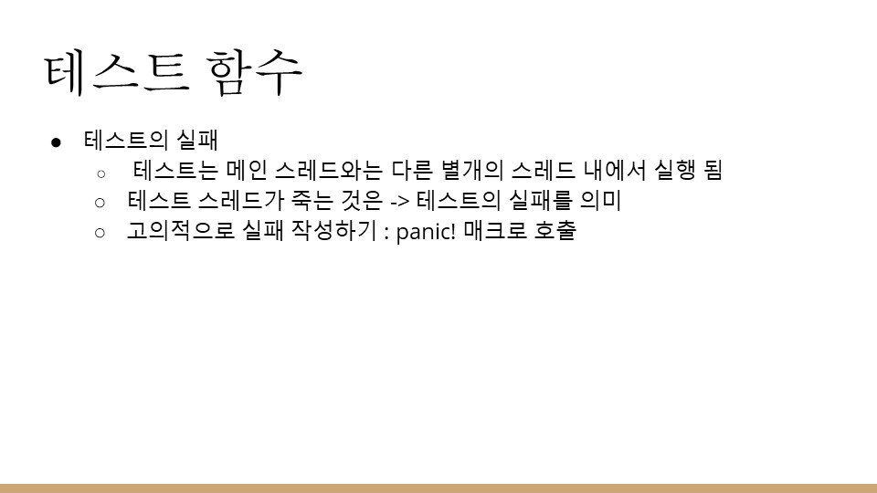
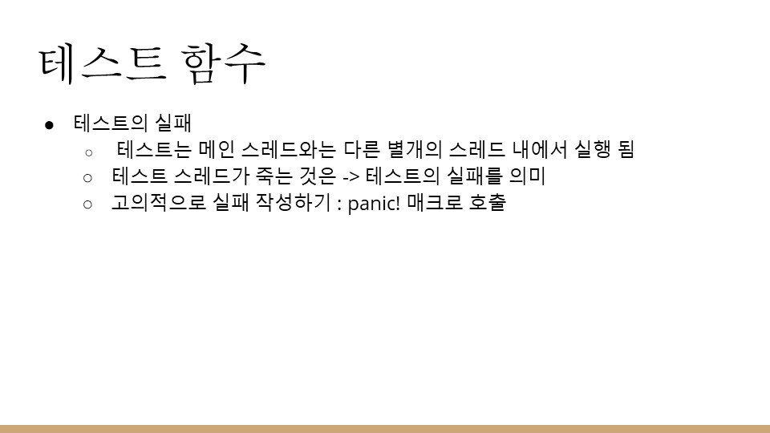
 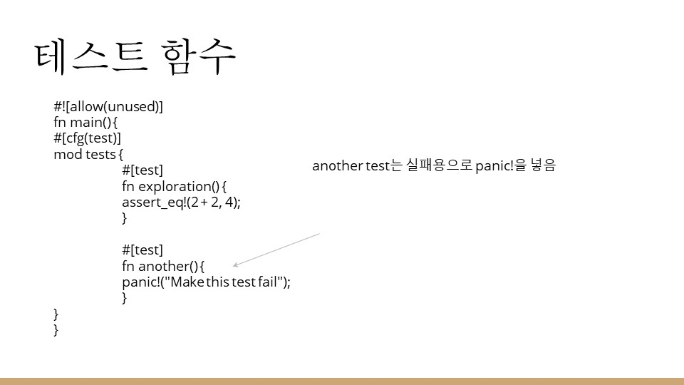
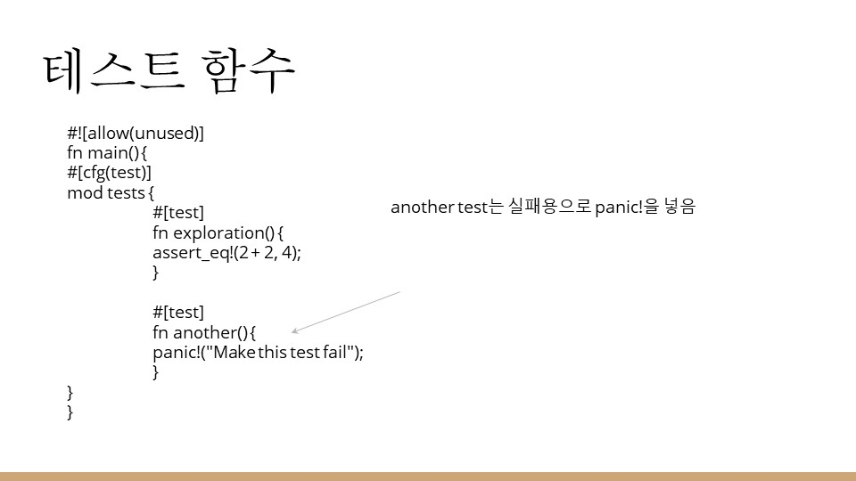


 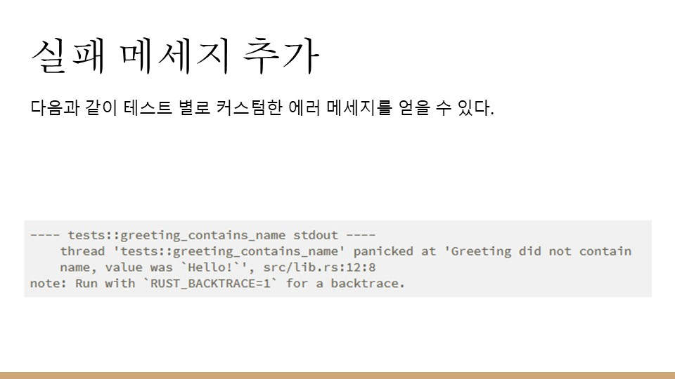
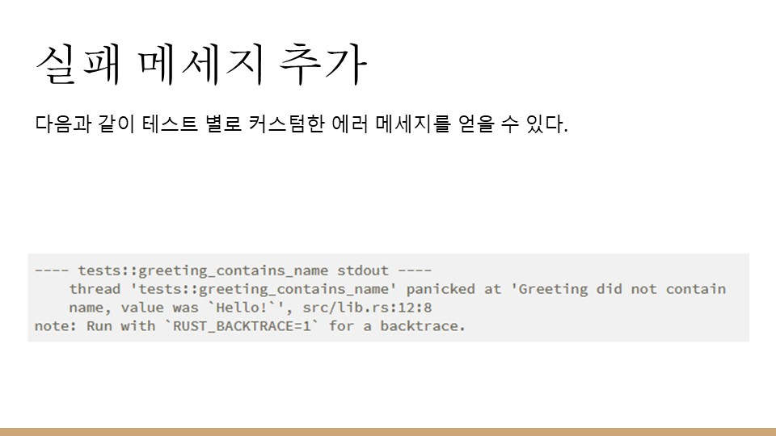
 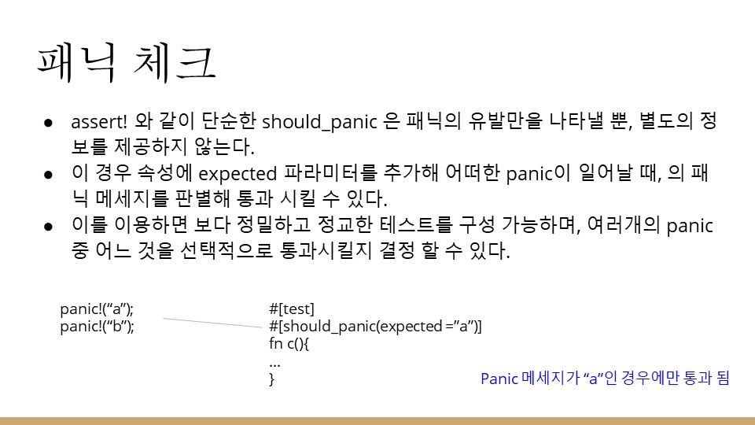
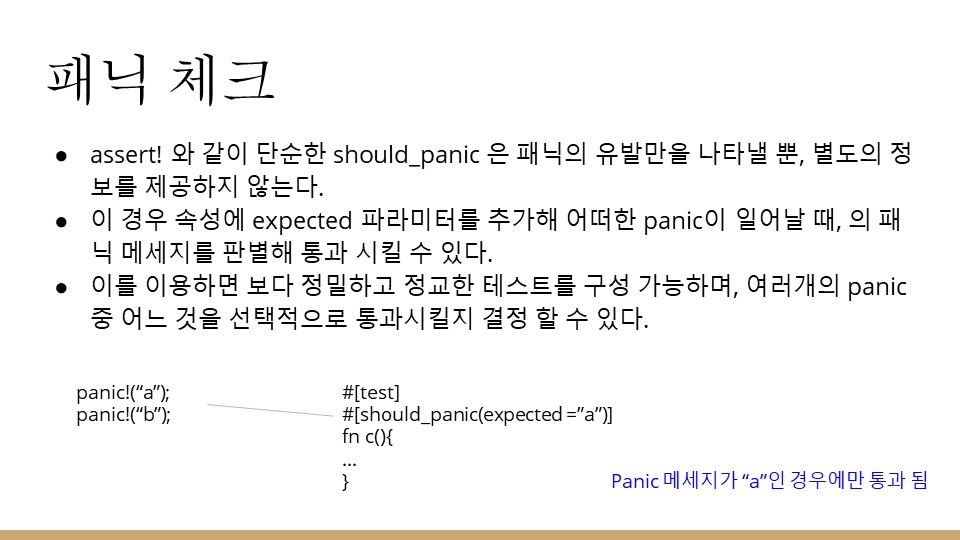
 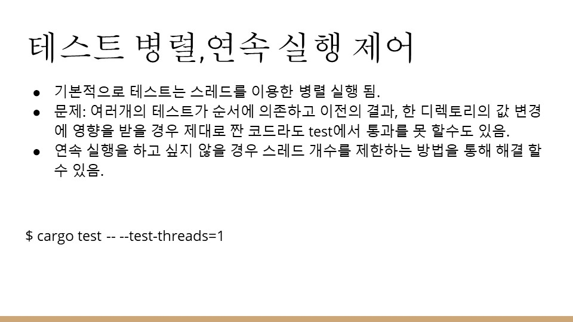
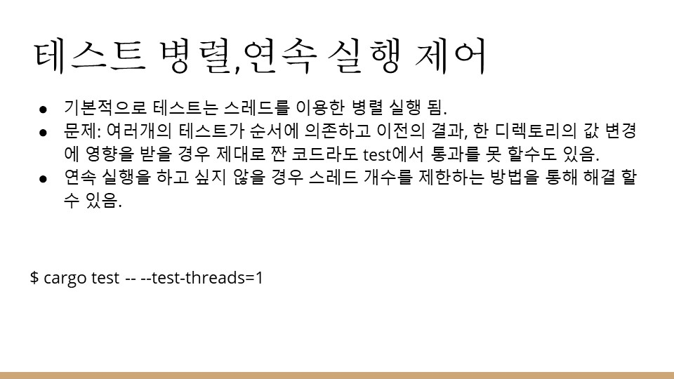